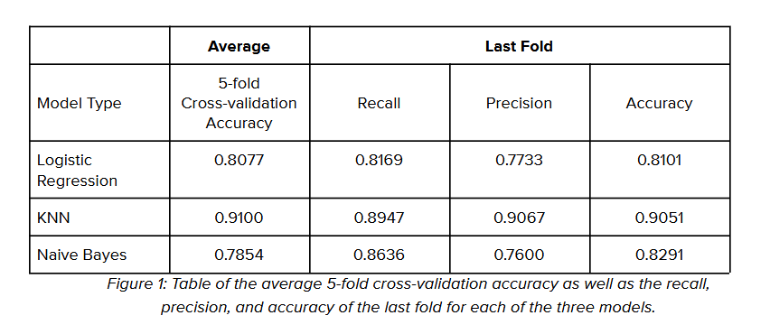
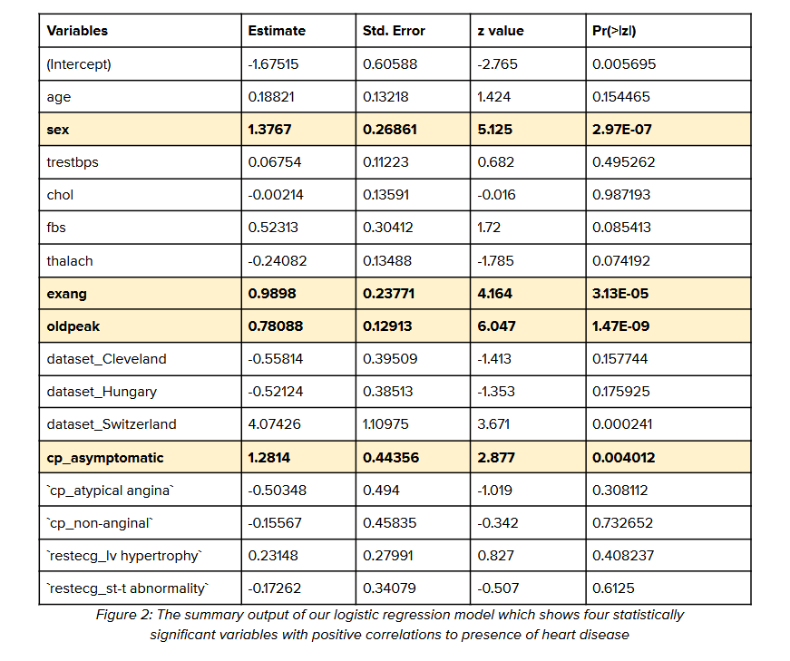

Dorwin Liang
Data Analytics & Visualization Specialist
I Turn Complex Data into Clear Visual Stories
I Turn Complex Data into Clear Visual Stories
Introduction
This project focuses on identifying key variables correlating with heart disease using logistic regression. I analyzed the UCI Heart Disease Dataset, applying logistic regression, KNN, and Naive Bayes models in R to pinpoint crucial health factors.
Research Questions
The questions I wanted to answer were:
Data Source
The analysis is based on the official dog bite incident records provided by the New York City Department of Health and Mental Hygiene, covering the years 2015-2022.
This dataset contains
Data Preprocessing in Excel and R
Taking a look at the dataset, I realized that 3 columns had way too much missing data, which I couldn’t fill in or remove the rows for, so I dropped the columns. The three columns are ‘ca’, ‘thal’, and ‘slope’ which represent the number of major vessels, heart defects, and the slope of the peak exercise ST segment, respectively. Next, I also removed the ‘id’ column as it would interfere with the accuracy of the model given that the column was just an index of each row. For the remaining 12 columns, I needed to remove rows with missing values in the variables that had missing values in them. To check which columns had missing data, I created a filter on Excel and spotted 7 columns that had missing data. In R, I created a list of these columns and used a built-in function to automatically remove rows where there are missing values. This resulted in a total of 741 rows remaining in our dataset.
For the next step, I converted categorical variables into a format that the models could interpret better using one-hot encoding, which turns a categorical column into separate columns with 0 or 1 indicating its presence or not. To do this, I researched and found out that there was a library called fastDummies that could help make this process more efficient and get rid of human error.
Afterwards, I ran into a problem with the logistic regression model I used later on where it wouldn’t run because of a multicollinearity issue, so I resolved this by getting rid of columns that was giving me this issue.
I then converted the rest of the categorical variables which were ‘sex’, ‘s’, and ‘exang’ into the binary format they needed to be in for the models to interpret. In the last step of the data preprocessing stage, I scaled the numerical columns to standardize them. I did this for the six numerical columns in this dataset using the scale function in R
Exploratory Data Analysis
Data mining Methods
The first and most ideal model I chose was logistic regression because it fit the question I intended to address perfectly. I wanted to see which variables greatly contribute to the presence of heart disease and logistic regression is a model that helps predict the probability of a binary outcome, and in addition, provides us with coefficients for each variable to see how much it contributes, as well as how statistically significant it is. Its interpretability is an advantage as it would allow our target audience, public health officials, to fully understand the impact of each variable. For all of our models, I used all of the variables available in our processed dataset. Specifically for logistic regression, the process of one-hot encoding of categorical variables was crucial for ensuring the model performed as expected because logistic regression is designed to work with numerical values.
KNN is the second model I chose to use because it can predict patterns and clusters in the dataset. I wanted to use a model that had a classification approach and dealt with the data’s proximity to one another. To use KNN, I included scaling to standardize numerical columns so that all variables contributed equally to the distance algorithm that KNN relies on. The model runs ten times for the number of neighbors in the model, which was up to 10. Then the dataset is divided into five folds randomly with one fold being used as the test set, and the remaining four folds as the training set. The model then has a matrix that contains the accuracy for each combination of neighbors and folds for model performance analysis.
For our third model, I chose to use Naive Bayes to test if it would outperform the other two models. The different algorithms would help give a different perspective on the dataset by showing how related the variables are to one another. To create a Naive Bayes model, I imported a package that I found through research that contains a function for the Naive Bayes classifier. The Naive Bayes function will be the same as the other models in the way that all variables will be used in the model.
Calculating and comparing model performances
To see the performance of the three different models, I used 5-fold cross-validation to calculate the average accuracy of the models. I also extracted the confusion matrix of the last folds of each model to calculate its respective recall, precision, and accuracy.
The table (Figure 1) above shows the average accuracy of each model as well as the recall, precision, and accuracy of the last fold of each model. By comparing the performance of the three models, I can see that KNN had the best accuracy in predicting the presence of heart disease with 91% accuracy. Logistic regression and Naive Bayes had about the same in terms of average accuracy at 80.77% and 78.54% respectively.
Looking at the last fold of each model, KNN also beat out the other two models in terms of precision and recall. in the scenario where a model is built to predict the presence of heart disease, it is important for accuracy, recall, and precision to be high. Accuracy reflects the overall correctness of the model which is important. A high recall rate means that false negatives are minimized which is extremely important because not correctly identifying a patient with heart disease can lead to serious consequences. Having high precision is also beneficial to minimize unnecessary interventions with patients who do not have early signs of heart disease.
The best model for predicting the presence of heart disease
Although KNN has the highest accuracy, recall, and precision, the model does not directly give us the answer I was looking for. Logistic regression remains the best model in predicting the presence of heart disease because it directly answers the question I was looking for. The ability to estimate the effect size of each variable is crucial in a task like identifying what contributes most to heart disease. While KNN has a higher predictive accuracy, logistic regression provides valuable insights into the specifics. With an average accuracy of 80.77%, it is still a high-performing model that is much more accurate compared to a random classifier.
The summary of the logistic regression (Figure 2) allows us to view the coefficient of each variable and whether it is statistically significant or not. Through this summary, I was able to see that four statistically significant variables had high correlations with heart disease. These four variables are the gender of the person (sex), the presence of exercise-induced chest pain (exang), ST depression induced by exercise relative to rest (oldpeak), and chest pain that had no symptoms (cp_asymptomatic).
Actionable steps for public health officials
From knowing the four statistically significant variables that strongly correlate with the presence of heart disease, I can provide actionable steps for public health officials to inform the public.
Firstly, given that gender is statistically significant and has a positive value, it means that men are more likely to develop heart disease than women. Additionally, the presence of exercise-induced chest pain also correlates highly with the presence of heart disease. To tackle this, public health officials can create and launch targeted campaigns for men who have chest pain while exercising and persuade them to get a heart health screening.
According to the model, it appears that the presence of heart disease is also prevalent in those who have asymptomatic symptoms, meaning they have an underlying medical condition but without knowing it because it does not physically affect them. In this case, ST depression induced by exercise is highly correlated to the presence of heart disease as well as asymptomatic chest pain. These two conditions are not easily noticeable as it does not have a reaction in your body that would have you thinking something is wrong. To solve this issue, public health officials will also have to make another campaign focusing on the entire population, focusing on addressing misconceptions about heart disease, and emphasizing that early signs of heart disease can be asymptomatic.
Conclusion
Using the UCI Heart Disease Dataset and a logistic regression model, I was able to reveal four statistically significant variables that contribute to the presence of heart disease. These variables are gender, exercise-induced chest pain, ST depression, and asymptomatic chest pain. These findings are important and relevant for public health officials as they can create health campaigns targeted towards men with high risk of heart disease as well as health campaigns that inform the general population of asymptomatic heart disease.
However, the results of our models should be taken with a grain of salt given the limitations of the dataset. There may be other variables that have an even higher correlation to the presence of heart disease which were not part of the dataset I used. During the data pre-processing, I also had to remove 179 rows in the dataset which accounted for roughly 19.4% of the data, leaving the model to work with 741 rows of data which is not much data to work with given an industry such as healthcare where precision and accuracy is important and the size of the dataset greatly affects those measures.
View the Powerpoint Presentation here: Heart Disease Analysis Presentation Deck